1. Introduction
This manual is a reference designed to familiarize you with the BNC Model 577 Series Pulse Generator and is arranged so that you can easily find the information you are looking for. Generally, each topic has its own section and no section assumes that you have read anything else in the manual. Technical specifications including electrical ratings and weight are included within the manual. See the Table of Contents to locate the specifications and other product information. The following classifications are standard across all BNC Test and Measurement products:
- Indoor use only
- Ordinary Protection: this product is NOT protected against the harmful ingress of moisture.
- Class 1 Equipment (grounded type)
- Main supply voltage fluctuations are not to exceed +/-10% of the nominal supply voltage.
- Pollution Degree II
- Installation (overvoltage) Category II for transient overvoltage events
- Maximum Relative Humidity: 0-80% RH, non-condensing
- Operating temperature range of 0 °C to 40 °C
- Storage and transportation temperature of -40 °C to 70 °C
- Maximum altitude: 2000 m (6562 ft)
- Suitable for continuous operation
- Cleaning Instructions: light dusting with a cloth damp with water and/or usage of compressed air is all that is needed.
1.1 Technical Support
For questions or comments about operating the Model 577, our technical staff can be reached via one of the following methods:
- Phone (415) 453-9955
- Fax (415) 453-9956
- Email info@berkeleynucleonics.com
- Internet www.berkeleynucleonics.com
1.2 Warranty
Warranty is 1 Year standard, unless otherwise specified. Materials and workmanship, return to manufacturer included. If repairs are required during the warranty period, contact the factory for component replacement or shipping instructions and include the serial number. This warranty is void if the unit is repaired or altered by others than those authorized by Berkeley Nucleonics Corporation.
1.3 Package Contents
The box you receive should contain the following:
- Model 577 Digital Delay / Pulse Generator
- AC Power Cord
- USB drive that includes the Operating Manual, Software Drivers and Communication Software
Contact BNC at (415) 453-9955 if any parts are missing.
1.3.1 Unpacking Caution
The Model 577 is shipped in an antistatic package to prevent electrostatic damage to the device. Electrostatic discharge (ESD) can damage several components on the device. Remove the device from the package and inspect it for loose components or any sign of damage. Notify BNC if the device appears damaged in any way.
2. Safety Issues
The 577 has built-in equipment protections to prevent harm to the unit and the user. If the equipment is used in a manner not specified by the manufacturer, the protection provided by the equipment may be impaired. Normal use of test equipment presents a certain amount of danger due to electrical shock because it may be necessary for testing to be performed where voltage is exposed.
You will significantly reduce the risk factor if you know and observe the following safety precautions:
- If possible, familiarize yourself with the equipment being tested and the location of its high-voltage points. Remember that high voltage may appear at unexpected points in defective equipment.
- Do not expose high voltage needlessly. Remove housing and covers only when necessary. Turn off equipment while making test connections in high-voltage circuits. Discharge high-voltage capacitors after shutting down power.
- When testing AC powered equipment, remember that AC line voltage is usually present on power input circuits such as the on-off switch, fuses and power transformer.
- Use an insulated floor material or a large, insulated floor mat to stand on, and an insulated work surface. Make certain such surfaces are not damp or wet.
- Use the time-proven "one hand in the pocket" technique while handling an instrument probe. Avoid contact with metal objects that could provide a good ground return path.
- Never work alone. Someone should always be nearby to render aid if necessary. Training in CPR first aid is highly recommended.
3. Pulse Concepts and Operations
3.1 Counter Architecture Overview
The 577 timing architecture is built around a single signal source feeding a System Timer, a set of Channel Timers, a digital output multiplexer, and dependent/independent timing controls described below.
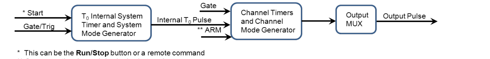
3.2 System Timer Functions
The System Timer functions as a non-retriggerable, multi-vibrator pulse generator. Once started, depending on the mode, the timer produces pulses continuously. Before pulses can be generated, the timer must first be armed and then receive a start pulse. Arming the counter is done by pressing the Run/Stop key. With external trigger disabled, the Run/Stop key also generates the start command; with external trigger enabled, the external trigger provides the start pulse. In either case, once started, the counter operation is determined by the System Mode Generator. Standard modes include:
- Continuous. Once started, T0 pulses are generated continuously.
- Single Shot. One T0 pulse is generated for each start command.
- Burst. "n" T0 pulses are generated for each start command.
- Duty Cycle. Once started, T0 pulses cycle on and off continuously.
The T0 pulses are distributed to all of the start inputs of the Channel Timers and Mode Generators.
3.3 Channel Timer Functions
The Channel Timer functions as a non-retriggerable, delayed, one-shot pulse generator: it generates one delayed pulse for every start pulse received. Once the channel timer has started counting, additional start pulses are ignored until the pulse completes. The start pulse for each channel is provided by the internal T0 pulse generated by the Internal System Timer. Whether or not a pulse is generated for each T0 pulse is determined by the Channel Mode Generator. Standard modes include:
- Normal. A pulse is generated for each T0 pulse.
- Single Shot. One pulse is generated at the first T0 pulse, after which the output is inhibited.
- Burst. A pulse is generated for each T0 pulse, "n" times, after which the output is inhibited.
- Duty Cycle. "n" pulses are generated for each T0 pulse, after which the output is inhibited for "m" times. The cycle is then repeated.
Different modes may be selected for each output, allowing a wide variety of output combinations. Each output may also be independently disabled or gated (using the external gate input).
3.4 Digital Output Multiplexer
The outputs of the Channel Timers are routed to a set of multiplexers, allowing any or all Channel Timers to be routed to any or all of the unit outputs. In normal operation the output of the Channel "x" Timer is routed to the Channel "x" output connector. For example, if a double pulse is required on Channel A output, you can multiplex the Channel A timer with the Channel C timer, adjusting each timer to provide the necessary pulses. Only timing parameters are multiplexed together, not amplitudes. The multiplexer is represented by an "n"-bit binary number (for example -HGFE DCBA- Mux -0000 0101-), where each bit represents a channel timer enabled by setting the bit to one; in this example timers A and C are combined on the current output.
3.5 Dependent & Independent Timing Events
The 577 allows the user to control the relationship between the Channel Timers by setting the sync source for each timer. Independent events are all timed relative to the internal T0 start pulse. Dependent events may be linked together by setting the sync source to the controlling event, allowing adjustments in one event without detuning the timing between it and a dependent event. For example, the Channel A and Channel B timers may each use T0 as their sync source, while the Channel C timer uses Channel A as its sync source so that it is dependent upon Channel A. The user may alter Channel A or B settings without having to also alter Channel C, whose function remains dependent with respect to Channel A.
4. Model 577 Front Panel Overview
4.1 Display Layout and Indicators
The Model 577 front panel has a keyboard, rotary adjustment knob, and an LCD display that allows the user to program all settings.
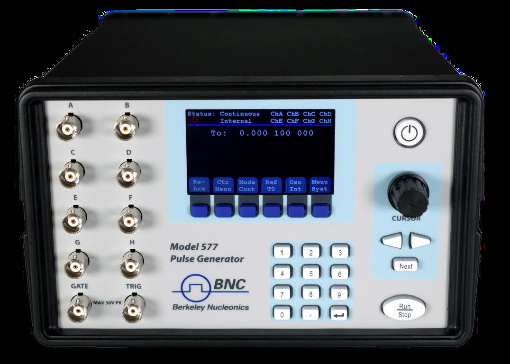
4.1.1 LCD Screen
A 3", 240x400 pixel TFT module displays all parameters and status information. Status information is located in the upper portion of the display. Parameters are changed via pushbutton and rotary adjustment menu control. An arrow on the left side of the screen indicates that there are additional parameters on that page. A blinking red circle in the upper left indicates that the system is currently generating pulses or actively waiting for an external trigger. The brightness may be adjusted for various lighting conditions.
4.1.2 Keypad (Pushbuttons)
Three keypad areas provide fast access to various menus and easy editing of system parameters.
- Blue Soft Keys. Provide one-touch access to the menus for setting up the System and channel parameters. Pressing the appropriate Blue Soft Key displays the sub-menu containing the corresponding parameters.
- Arrow Keypad. The left and right arrow keys move the cursor to different positions within the currently selected parameter. The Next key selects the next parameter in the currently displayed menu.
- Numeric Keypad. The number keypad allows parameters to be entered in a numeric format.
- Standby/Power. Pressing the Standby/Power button turns the device on/off and saves the current parameters before shutting down.
- Run/Stop. Pressing Run/Stop arms or disarms the system and begins generating pulses if in the correct mode. In triggered mode the system is armed but will not output pulses until a valid trigger.
4.1.3 Rotary Adjustment Knob
The Rotary Adjustment Knob may be used to adjust the currently selected parameter. The step size is controlled by the cursor position; turning the knob faster increases the step size. Pushing the knob performs functions similar to the Next key.
4.1.4 BNC Connectors
One Gate Input (GATE), one Trigger Input (TRIG), and up to 8 Channel Outputs are available on the front of the unit.
5. Model 577 Rear Panel Overview
5.1 Layout and Connectors
The Model 577 rear panel has power input, clock in and out, and communication connections.
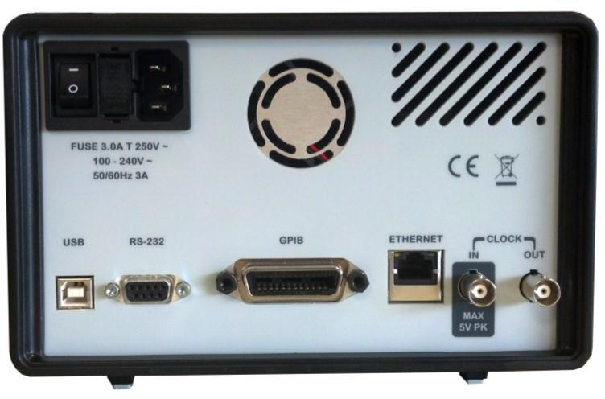
| Connector | Description |
|---|---|
| AC Power Connector | Operates from 100 to 240 V at a line frequency of 50-60 Hz. |
| Power Switch | If used to turn the unit off, changes made to data or parameters will not be saved. |
| BNC Connectors | External Clock input (CLK IN) and External Clock output (CLK OUT) are standard. CLK IN accepts 10 MHz to 100 MHz in user-selectable discrete values. CLK OUT provides T0 or Ref out (10 MHz to 100 MHz) in user-selectable discrete values. |
| USB Port | A female USB B connector, standard, used to control the device with a computer. |
| RS-232 Port | A female DB-9 connector using RS-232 serial protocol, standard. |
| Ethernet Port | An RJ45 Ethernet connector (optional) to control the unit with a computer. |
| GPIB Port | An IEEE 488 connector (optional) to control the unit with a computer. |
6. Navigating the 577 Front Panel
6.1 Selecting Menus
Parameters are grouped in menus, selectable using the Blue Soft Keys, the Next key, and the Rotary Adjustment Knob. For example, to select the output channel parameters, press the Blue Soft Key corresponding to the Channel menu; a submenu appears containing the corresponding Channels, which may be navigated and selected with the Next key and/or the Rotary Adjustment Knob. This hierarchy is consistent with Channel menus, System menus, etc.
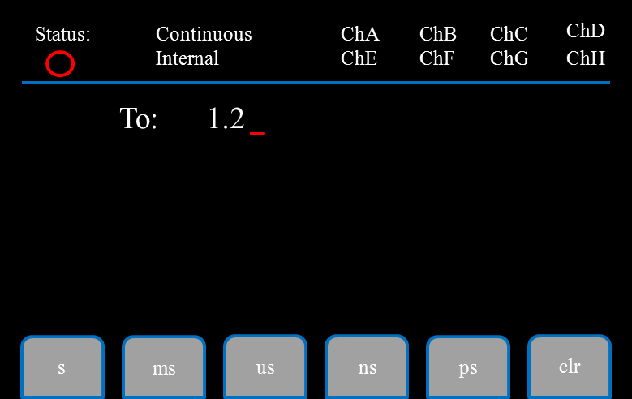
6.2 Selecting Menu Items
Within a submenu, the highlighted item indicates the current menu item for selection. Pressing the Next key or the rotary knob selects the item, while rotating the knob moves the cursor to a different submenu item.
6.3 Numeric Input Mode
When the current parameter is numeric, the system enters Numeric Input Mode. Data may be edited in one of three ways. Using the arrow keypad, the left and right arrows select a digit to edit (the selected digit is underlined by a blinking cursor), and the Rotary Adjustment Knob increments and decrements it; slow rotation changes the active digit by one, and faster rotation is 10 to 1000 times faster. An additional mode uses the numeric keypad: enter the number including the decimal point and complete entry with the Enter key. In this mode the soft keys switch to units; for example, to enter 25 ns, type 25 then press the nano-seconds soft key. If no soft key is pressed and Enter is pressed, the units will be seconds.
6.4 Entering Non-Numeric Parameters
When the current menu item is non-numeric, Blue Soft Keys select among different options for the parameter. The Rotary Adjustment Knob may also change the selection. If the item is an on-off toggle, the Blue Soft Keys enable and disable the item.
7. 577 Menu Structure
7.1 The Screen at a Glance
The screen has several areas of interest. Information above the blue line always appears on the screen; information below the blue line changes with the selected menu. The Status (upper left) shows if the unit is armed or generating pulses: a hollow red circle means not armed; a circle that blinks hollow then filled means armed and waiting for a trigger or generating output pulses. The System Configuration area (right of Status) displays the current System Mode (Continuous, Single Shot, Burst or Duty Cycle) and the T0 source (internal or external). The channel area (right of System Configuration) shows whether a channel is enabled (white) or disabled (gray). The bottom of the screen is the Soft Key/Menu area, and the middle is the Setup area where all user-changeable items appear.
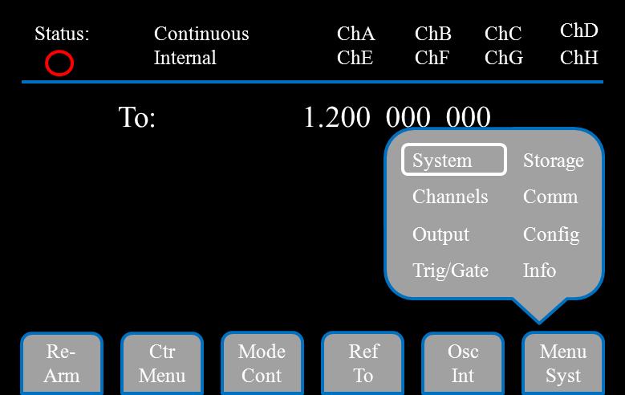
7.2 System Mode Menus
7.2.1 Selecting the Desired Menu
The 577 menus are accessed by pressing the right-most soft key. This sub-menu lets the user return to the System menu, select the Channel and Output menus, enable and configure a Gate or Trigger signal, Save or Recall settings, and change Communications and Configuration settings. It also has selections for device-specific information such as serial number and firmware versions.
7.2.2 Setting System Mode of Operation
The Mode soft key selects the mode for the T0 System Timer; the display shows additional parameter choices (Burst, On, Off, etc.) only when appropriate. Continuous: once started, T0 pulses are generated continuously; select the rate of the pulses. Single Shot: one T0 pulse per start command. Burst: sets the number of pulses to be generated in Burst mode. Duty Cycle: allows the T0 rate to be a sub-multiple of the Clock Source, with On (number of pulses generated during each On cycle) and Off (number of pulses skipped during each Off cycle).
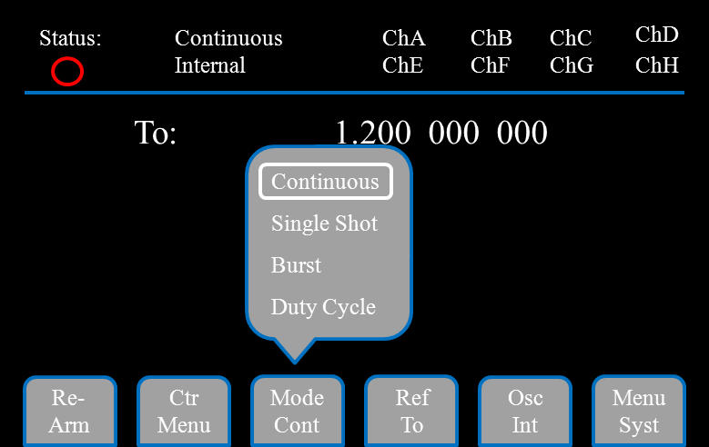
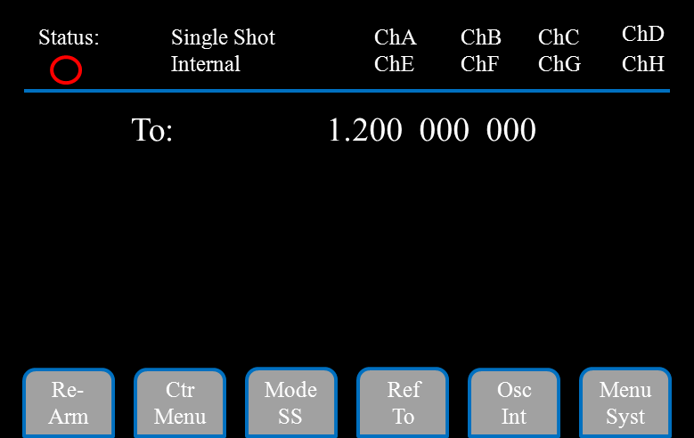
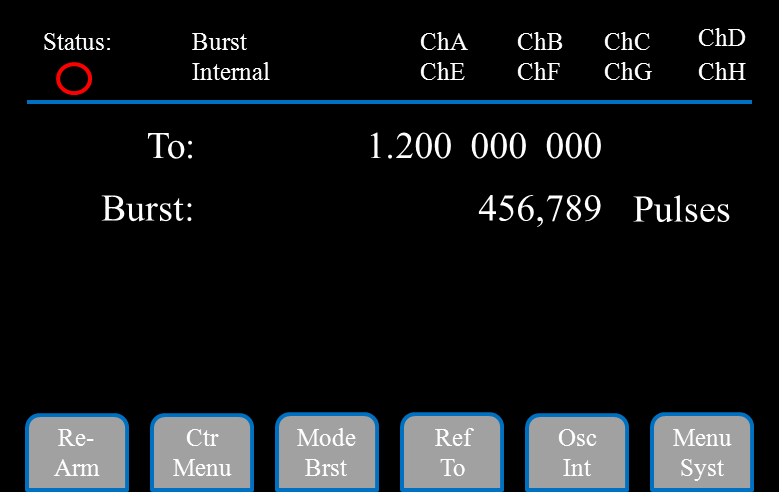
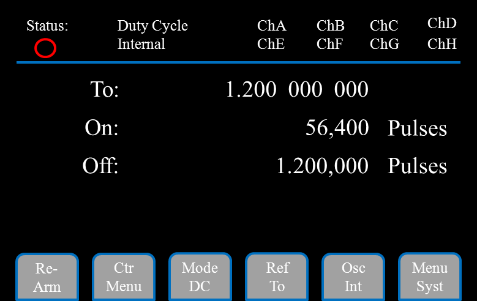
7.2.3 Setting the Internal Reference Source and Rate
The 577 can be timed by the internally generated clock or by an externally connected Clock Source. If the system is set to an external input source and cannot lock onto the source frequency, an error appears on the screen. Osc selects the internal or external Clock Source; To sets the T0 period (or rate) that determines the fundamental output frequency.
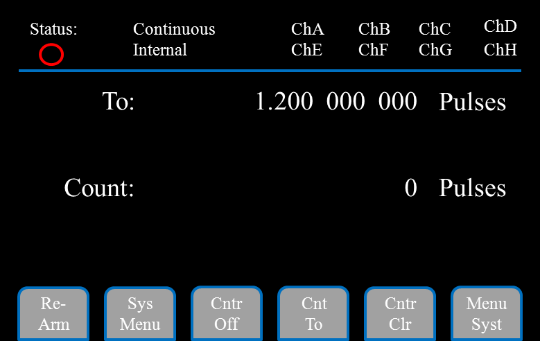
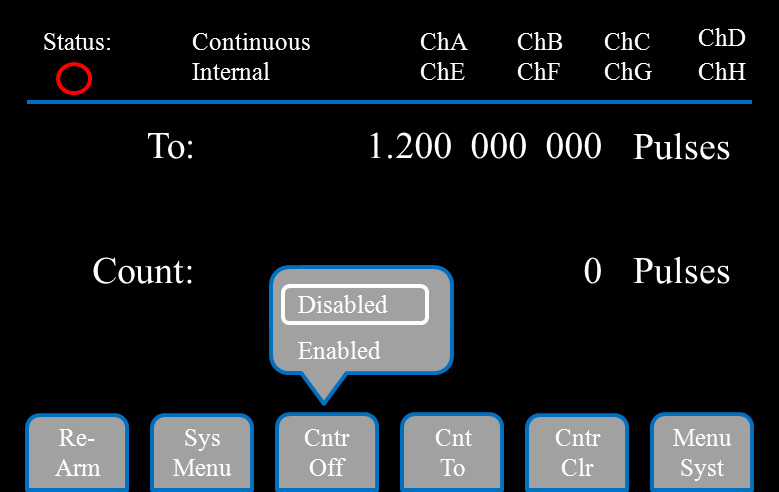
7.2.4 Setting the Output Reference
The 577 can output a clock signal to an external unit. The user can choose 10 MHz or output the T0 signal. Ref selects the frequency of the output reference for synchronizing with external system components.
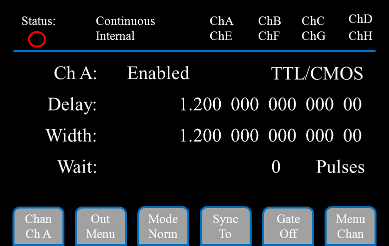
7.2.5 Rearming the System
The 577 can reset the internal channel timers with a soft key or a simple command. When the unit is used in a channel single shot mode (single shot or burst) or externally triggered, the desired pulse train is produced and the unit remains armed but not producing pulses. With the ReArm capability the pulses on single-shot channels can be reproduced without disruption of the continuous channels.
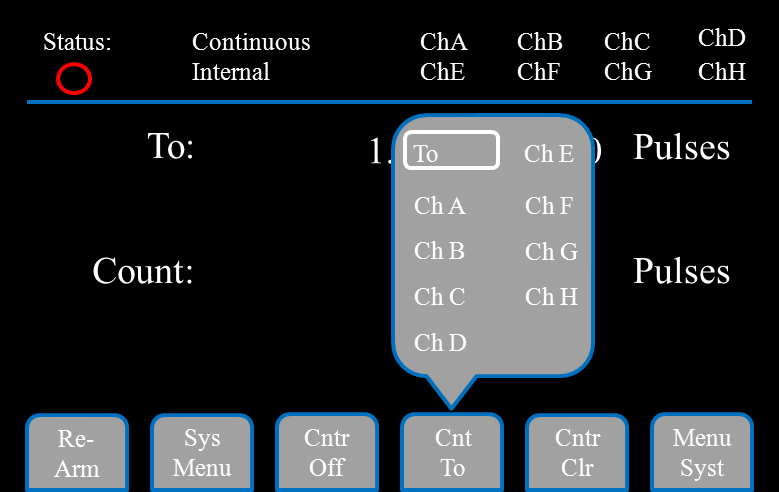
7.2.6 Setting the Shot Counter Parameters
The 577 can count pulses from an internal or indirectly from an external source. This is a 32-bit counter, so the maximum count is 4,294,967,296. Choose the source from the soft key (T0 or CH [A-H]). The Counter menu is accessed by pressing the Ctr soft key while in the System menu page, where the counter source can be selected and the counter enabled, disabled or cleared.
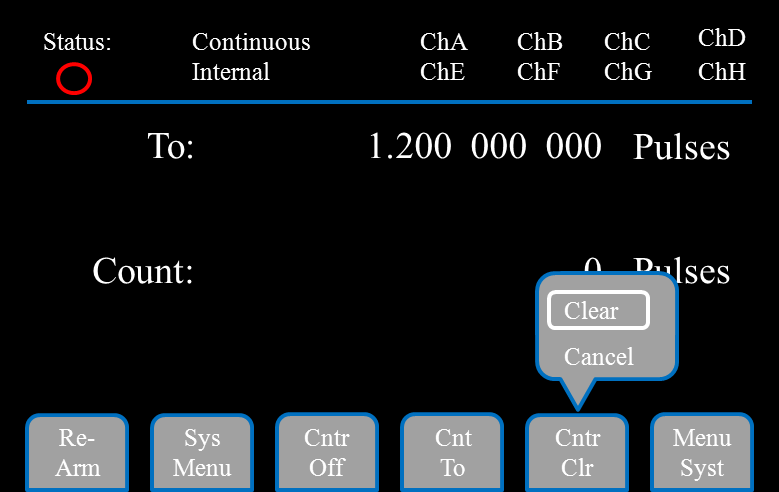
7.3 Channel Menus
7.3.1 Enabling Channel Output
At the top of the Setup area on each Channel Menu page is a parameter to Enable or Disable the displayed channel. Each channel may be individually controlled and is listed in the Status area: white if enabled, gray if disabled.
7.3.2 Channel Menu in Burst Mode
The Burst Mode Channel Menu page includes an additional parameter to set the number of pulses in the burst.
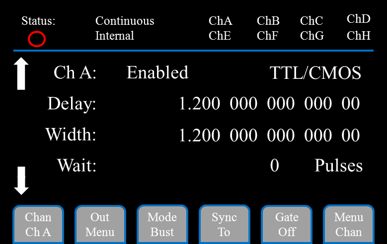
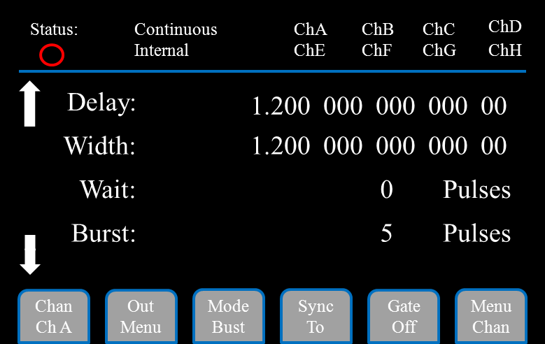
7.3.3 Channel Menu in Duty Cycle Mode
The Duty Cycle Mode Channel page includes additional parameters to set the number of On pulses and the number of Off pulses.
7.3.4 Channel Page Sub-Menus
In the Channel Menu page the soft key sub-menu options change. The left-most soft key selects the channel to display. The next soft key toggles the display between the Output page and the Channel page. The third soft key sets the Channel Mode (Normal, Single Shot, Burst or Duty Cycle).
7.3.5 Sync Menu
Although each channel receives its start pulse from the internal T0 pulse, the start pulse can be assigned relative to the T0 pulse or relative to any other channel pulse, allowing dependent events to be linked. The entered delay value is relative to the selected sync source, changed by pressing the Sync soft key in the Channel Menu page. The 577 will not allow a circular chain of sync sources that would result in a channel triggering itself.
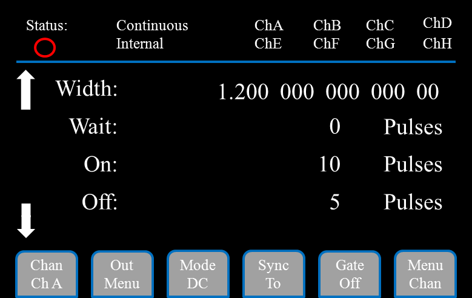
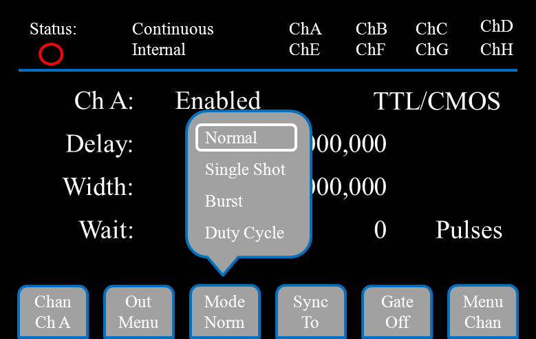
7.3.6 Output Menu
The second key from the left toggles the display between the Output page and the Channel page. The 577 supports two output types: a high-speed TTL/CMOS compatible output, and an Adjustable voltage output for applications that require different voltage levels or higher current. The Polarity of the pulses can also be defined to function as Active High or Active Low.
- Mode. Selects the Output Mode: TTL/CMOS, Adjustable, Optical, High Impedance (Hi Z), or Low Impedance (Lo Z).
- Pol. Sets the pulse polarity, Active High or Active Low.
- Ampl. Sets the output voltage level when in the Adjustable mode.
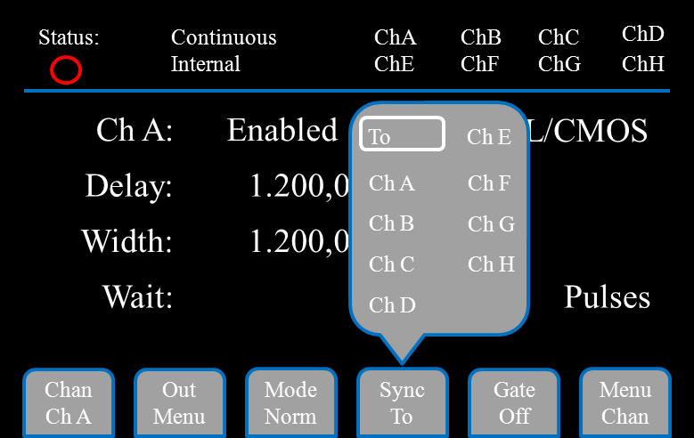
7.3.7 Channel Multiplexer
It is possible to generate more than one channel signal from a single channel output. To define which channels are fed into the Channel Multiplexer, set the corresponding bit for the desired channels to 1 and others to 0. Access the Multiplexer Menu by selecting Output Menu from the Menu soft key, or by entering the Channel Menu and pressing the soft key labeled Out Menu. Mux is the enable/disable bit field (for example -HGFE DCBA- / -0000 0101-).
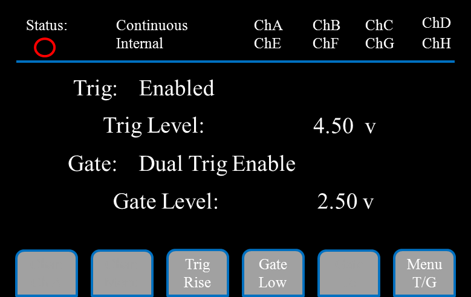
7.4 Other System Menus
7.4.1 Gate or Trigger Input Menu
To set up the Gate/Trigger functionality, select the Gate/Trig Menu with the Menu soft key. Here the Gate and Trigger inputs can be enabled and disabled and threshold levels set. The Trig soft key sets the active edge for the trigger input. The Gate can be set to one of five modes:
- Pulse Inhibit
- Output Inhibit
- Channel Pulse Inhibit
- Channel Output Inhibit
- Disabled
With the Dual Trigger option, the Gate can also be set to Dual Trigger Enable or System ReArm Enable. If enabled, the Dual Trigger option activates a second soft key to set the active edge for the gate input as a trigger source.
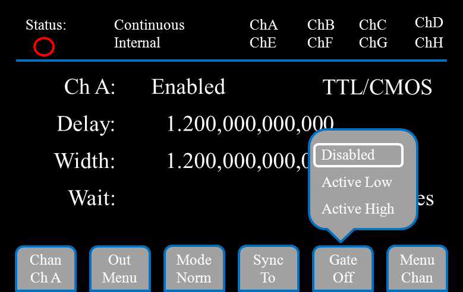
The 577 ignores incoming triggers until all channels have fully completed their assigned pulses, even if a channel is disabled. For example, if all channels were set to 100 us pulse widths and one channel had a 50 us delay, even if that channel was disabled, the 577 could not be retriggered faster than 150 us. To avoid triggering problems, set unused channels to have a combined delay and width time less than the desired trigger rate. In Single Shot mode with a trigger source enabled, the 577 generates one T0 pulse for every incoming trigger; in Continuous, Duty Cycle or Burst mode, the first incoming trigger starts the 577 and every subsequent trigger is ignored until re-armed.
7.4.2 Saving and Loading Configurations
To Save and Recall a unit configuration, select the Storage Menu with the Menu soft key. Select the desired number location, press Save and confirm; to load, select the number location and press and confirm with the Load soft key. The system can save and recall up to 16 configurations. The unit ships with an uncorrectable factory default configuration located in Config 0 (Recall 0 by pressing the Load Dflt soft key).
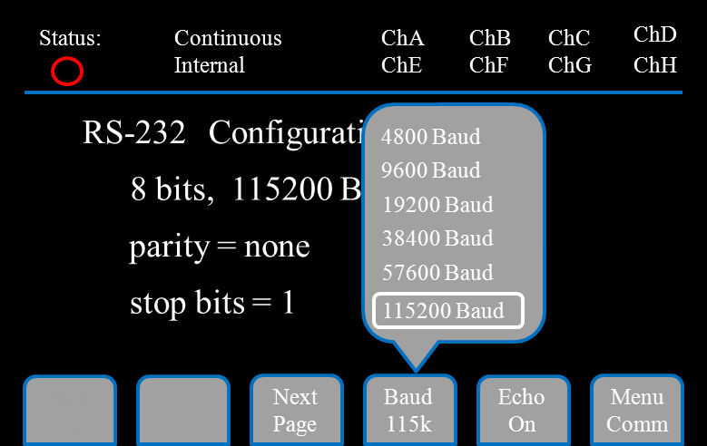
7.4.3 Communication Configurations
To gather information about the unit configuration or change a communication parameter, select the Comm Menu with the Menu soft key. The Baud Rates for USB and RS-232 can be changed independently, and the Echo function can be enabled or disabled for both independently. Additional pages show all available communication methods, and the GPIB Address can be set if the Communications Option is installed.
7.4.4 Configuration Menu
To enter the Configuration Menu, select Config with the Menu soft key. Here the Screen Brightness, Key Beeper Volume and Key Repeat Rate can be changed. The system can be set to generate pulses automatically when powered on by enabling Auto Start. The DPM soft key chooses English or European delimiter notation.
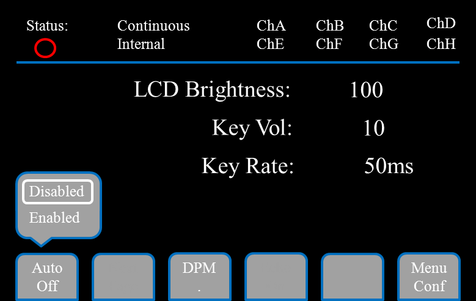
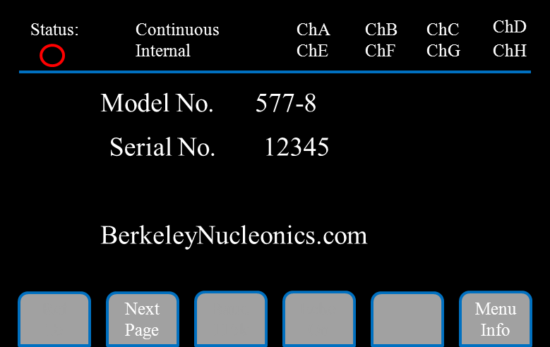
7.4.5 Information Menus
The Information Menu displays system configuration information (serial number, model and code versions). The third information page shows the type of input/output module installed in each bay and whether the Dual Trigger or Communications upgrade option has been purchased.
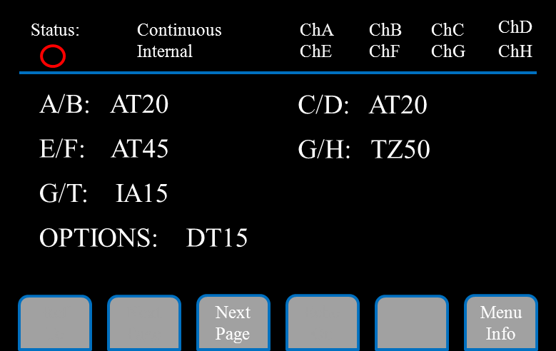
8. Remote Communication
The 577 ships standard with an RS232 serial and USB interface. Ethernet and GPIB interfaces are available as an option. All menu settings can be set and retrieved over the computer interface using a simple command language consistent with the Standard Commands for Programmable Instruments (SCPI). The syntax is the same for all interfaces.
8.1 RS-232 Interface
The serial port is on the back of the 577 and uses a 9-pin D-type connector with the following pin-out (as viewed from the back of the unit):
| Pin | Function |
|---|---|
| 1 | No Connection |
| 2 | Tx – Transmit (to computer) |
| 3 | Rx – Receive (from computer) |
| 4 | DTR – Connected to pin 6 |
| 5 | Ground |
| 6 | DSR – Connected to pin 4 |
| 7 | RTS – Connected to pin 8 |
| 8 | CTS – Connected to pin 7 |
| 9 | No Connection |
The serial port parameters should be set as follows:
| Serial Parameter | Value |
|---|---|
| Baud Rate | 4800, 9600, 19200, 38400, 57600, 115200 (default 115200) |
| Data Bits | 8 |
| Parity | None |
| Stop Bits | 1 |
8.2 USB Interface
The USB interface is standard. The Model 577 uses an FT232 UART with FTDI drivers, standard on almost any PC. Before this communication can be used, the appropriate drivers must be installed (included on the CD shipped with your unit). USB communication is achieved by using a mapped (virtual) COM port on the PC. It may be necessary to cycle power on the 577 after connecting a USB serial cable between the 577 and the PC.
USB communication notes:
- The correct drivers must be installed on the personal computer before communication can be accomplished via USB.
- The BAUD rates on the PC and on the pulse generator must match for successful communication.
- The USB port's BAUD rate on the pulse generator can be set using the SCPI command
:SYSTem:COMMunicate:USB:BAUD <baud rate>, where the baud rate can be 4800, 9600, 19200, 38400, 57600, or 115200 (default). - USB 1.0 specification is used. The USB cable can be removed without "unplugging" the device in the operating system environment.
8.3 GPIB Interface
Also known as IEEE-488, a GPIB computer interface is optional on the 577. Before using this interface, the address must be set using the GPIB address menu item.
8.4 Ethernet Interface
An RJ-45 jack is optional on the 577. This interface uses a module to transfer data through the Ethernet port to the host computer.
8.4.1 IP Address and Raw TCP/IP Connection
One of the most popular methods of setting up Ethernet communication is Raw TCP/IP. The Ethernet module is a "Digi Connect ME" device manufactured by Digi International, Inc. A set of Digi utilities and documentation is included on the CD shipped with the pulse generator.
8.4.2 Determining IP Address
The Digi module is reset to factory defaults before leaving the factory, ready to be assigned an IP address by the local DHCP server. If a crossover cable is used, the Ethernet device assumes a default IP address. The Digi utility "Digi Device Discovery" (Start, All Programs, Digi Connect, Digi Device Discovery) scans the LAN for Digi Ethernet modules; click "Refresh View" if the utility fails to see the unit at first.
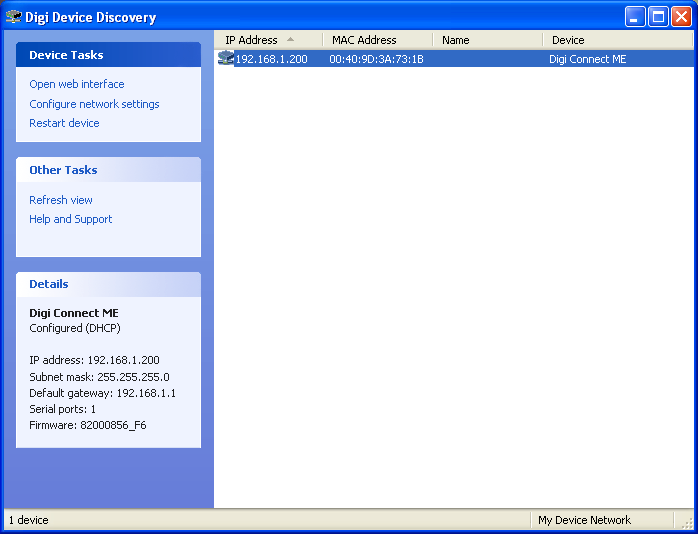
8.4.3 Setting the 577 to Raw TCP Protocol
Double-click the highlighted IP address to open a web interface for the Digi module. For units purchased before December 2020 the default username is "root" and password is "dbps". Due to California SB-327, units with a LAN port purchased after December 2020 have a unique username and password written on the Calibration Certificate shipped with the unit (contact ddgsupport@berkeleynucleonics.com). In the Digi Connect ME Configuration screen select "Serial Ports", click the named port and check Enable Raw TCP Sockets (default socket port 2101), then Apply. In "Basic Serial Settings" set Baud Rate 115200, Data Bits 8, Parity None, Stop Bits 1, Flow Control None, then Apply. A static IP can be set from the web interface; if changed to an address incompatible with the LAN, a crossover cable must be used to access the module settings again.
8.5 Programming Command Types and Format
The 577 uses two types of programming commands: IEEE 488.2 Common Commands and SCPI commands. HyperTerminal or any generic terminal program may be used to interactively test the commands using the RS232 interface.
8.5.1 Line Termination
The pulse generator uses text-style line terminations. When a command is sent, the firmware reads characters until it reads the line termination sequence (carriage return + linefeed, ASCII 0D and 0A). All command strings need these characters appended. When the unit responds, it also appends these characters. If the "echo" parameter is enabled, there will be two sets of line terminators. The unit echoes commands on the DB9 serial and USB ports only. The unit responds to every communication string: to a query with the queried response (or error code), and to a parameter change with "ok" (or error code). It is recommended to send a single command per string and immediately read the response.
8.5.2 IEEE 488.2 Common Command Format
Common Commands control generic system functions such as Reset, configuration storage and Identification, and always begin with the asterisk (*) character; parameters are separated from the command by a space. For example: *RST, *RCL 1, *IDN? (each followed by CR+LF).
8.5.3 SCPI Command Format
SCPI commands are shown as a mixture of upper and lower case; upper-case letters indicate the minimum essential characters. You may send either the abbreviated version or the entire keyword, in any case. For example, for POLarity, both POL and POLARITY are acceptable; POLAR generates an error. SCPI commands have a hierarchical structure with keywords separated by colons followed by data parameters and terminators, for example :PULSE1:STATE ON and :PULSe1:WIDTh 0.000120. Any parameter may be queried by appending a question mark, for example :PULSE1:STATE? returns 1.
8.5.4 - 8.5.7 Keyword Separators, Optional Keywords, Channels and Parameter Types
A colon (:) separates one keyword from the next lower-level keyword; a space separates the keyword header from the first parameter; multiple parameters are separated with commas. Optional keywords and/or parameters appear in square brackets [ ]; the brackets are not part of the command. Some commands such as PULSe allow specifying a channel with an optional numeric suffix shown in square brackets; the numeric parameters correspond to 0 = T0, 1 = ChA, 2 = ChB, and so on. If you do not specify the channel, the implied channel is set by :INSTrument:SELect or the last referenced channel; after power-up or reset the default is channel #1. Parameter types: <numeric value> accepts decimal representations including signs, decimal points and scientific notation; <boolean value> is 1/ON (true) or 0/OFF (false); <identifier> selects from a finite number of predefined strings.
8.5.8 Error Codes
The 577 responds to all commands with either ok or ?n, where "n" is one of the following error codes:
| Code | Meaning |
|---|---|
| 1 | Incorrect prefix (no colon or * to start command). |
| 2 | Missing command keyword. |
| 3 | Invalid command keyword. |
| 4 | Missing parameter. |
| 5 | Invalid parameter. |
| 6 | Query only, command needs a question mark. |
| 7 | Invalid query, command does not have a query form. |
| 8 | Command unavailable in current system state. |
| 9 | Parameter out of bounds for the given module. |
8.6 577 Commands (SCPI Command Summary)
All menu settings can be set and retrieved over the computer interface using the command language below. Upper-case letters indicate the minimum essential characters; you may send the abbreviated or full keyword in any case. Subsystem-header rows (with no parameter) show the command tree. Optional channel suffixes follow the numbering 0 = T0, 1 = ChA, 2 = ChB, and so on.
:INSTrument
| Keyword | Parameter Range | Notes |
|---|---|---|
:INSTrument | The units' upper level command keyword. | |
:CATalog | ? | Returns a comma-separated list of the names of all the channels. Example: a two channel unit would return T0, CHA, CHB. |
:FULL | ? | Returns a comma-separated list of the names of all the channels and their associated number. For example: a two channel unit would return T0, 0, CHA, 1, CHB, 2. |
:COMMands | ? | Returns an indentured list of all valid SCPI commands. |
:NSELect | 0 - 8 | Selects a channel using the numeric value. |
:SELect | T0 / CH[A-H] | Selects a channel using the identifier. |
:STATe | 0/1 or OFF/ON | Enables/Disables the selected channel output. If no channel has been selected the command is applied to T0. If T0 is selected all outputs are affected. Enabling T0 is the same as pressing the RUN button. |
| Keyword | Parameter Range | Notes |
|---|---|---|
:DISPlay | Command to change the units display settings. | |
:STATe | 0/1 or OFF/ON | Command to lock the display and keypad entry. This command will bring up a window on the display so current settings cannot be seen or changed. The unit can still be powered down for safety, but when turned back on the current settings will not be retained. |
:MODe | 0/1 or OFF/ON | Command to change the units display update settings. Setting to 1 will force a display update when a command is received via serial communications. Setting to 0 will turn this feature off. The default setting is 1.*Note: To speed up communication response turn this off. |
:BRIGhtness | 0 - 100 | Command to increase or decrease the amount of light the display will output. A value of 0 will turn off the display and a value of 100 will make it the brightest. |
:UPDate | ? | Query only. Will force the display to be updated with the current parameters. |
| Keyword | Parameter Range | Notes |
|---|---|---|
:SYSTem | Command to change the units system settings. | |
:STATe | ? | Query Only Command. |
:BEEPer | ||
:STATe | 0/1 or OFF/ON | Command to turn on or off the systems' beeper. |
:VOLume | 0 - 100 | Command to change the units' beeper volume. |
:COMMunicate | ||
:USB | ||
:BAUD | 4800 / 9600 / 19200 / 38400 / 57600 / 115200 | Command to change the baud rate for the USB interface. |
:ECHo | 0/1 or OFF/ON | Command to enable/disable the echo function on the USB interface. The Echo function will cause the unit to repeat the command received to the PC. |
:SERial | ||
:BAUD | 4800 / 9600 / 19200 / 38400 / 57600 / 115200 | Command to change the baud rate for the RS-232 interface. |
:ECHo | 0/1 or OFF/ON | Command to enable/disable the echo function on the RS-232 interface. The Echo function will cause the unit to repeat the command received to the PC. |
:GPIB | ||
:ADDRess | 1 - 12 | Sets the GPIB Address if the Comm option is installed. |
:AUTorun | 0/1 or OFF/ON | When the unit is powered up, if this command is enabled, the unit will start pulsing automatically. |
:KLOCk | 0/1 or OFF/ON | Command to lock out the keypad. |
:CAPS | 0/1 or OFF/ON | The default value is 1, which means the unit is not case sensitive. 0 means the commands sent to the unit must be capitalized.*Note: To change this parameter the unit must be power cycled before the command will take effect. |
:SERNumber | ? | Query only. Returns the Serial Number of the 577. |
:VERSion | ? | Query only. Returns the current Firmware and Bootloader versions installed on the 577 Main Processor. |
:BVERsion | ? | Query only. Returns only the current Bootloader version installed on the 577 Main Processor. |
:DVERsion | ? | Query only. Returns the current Firmware version installed on the 577 Front Panel Processor. |
:GVERsion | ? | Query only. Returns the current FPGA code version installed on the 577. |
:NSID | ? | Query only. Returns firmware and FPGA identification numbers. Used to identify Non-Standard FW and FPGA codes that may have been created for customer testing. |
| Keyword | Parameter Range | Notes |
|---|---|---|
:PULSe[0] | Command to change the units global settings; this is the same as using the :SPULse command. | |
:STATe | 0/1 or OFF/ON | Enables or disables the output for all channels. This command is the same as pressing the Run/Stop button. |
:PERiod | 50 ns to 999.999,995 s | Sets the T0 period. Value can be integer, decimal or scientific notation. There is a rate limitation for 35 and 45 volt modules. |
:MODe | NORMal / SINGle / BURSt / DCYCle | Changes the system output mode. |
:BCOunter | 1 to 10,000,000 | Changes the number of pulses to output when the system is in burst mode. |
:PCOunter | 1 to 10,000,000 | Changes the number of on pulses to output when the system is in Duty Cycle mode. |
:OCOunter | 1 to 10,000,000 | Changes the number of off pulses to suppress when the system is in Duty Cycle mode. |
:ICLock | Sys, 10 | Menu for selecting the clock source. Sys is the internal system clock; for external, select the frequency in MHz desired. |
:OCLock | T0, 10 | Allows the user to select the clock source to output. The choices are the internal system clock or a range of frequencies in MHz. |
:COUNter | Subsystem. Contains commands to define the Counter function. | |
:STATe | 0/1 or OFF/ON | Enables/Disables the counter function. |
:CLear | 0/1 or OFF/ON | Clears the trigger counter. |
:COUNt | T0 / CH[A-H] | Sets and queries the source the counter will count. |
:PULSES? | 0 to 4,294,967,296 | Will return the current count up to 232 counts. |
:TRIGger | ||
:MODe | DIS or TRIG | Sets the global trigger mode for the unit: when set to single pulse each trigger input produces an output pulse; in burst mode each trigger input produces a burst of output pulses; in continuous or duty cycle mode the trigger input starts the pulses (the trigger functions the same as pressing the Run/Stop button). |
:EDGe | RISing / FALLing | Choose the edge to trigger on (only used when the option for the gate to be a second trigger input is enabled). |
:LEVel | .20 V - 15 V | Choose the gate level threshold to trigger on; this should be set to ~50% of the input potential. |
:GATe | ||
:MODe | DISable, PULSeinh, OUTPutinh, CHPUlseinh, CHOUtputinh | Sets the gate mode for the unit: in pulse inhibit mode, if the pulse has started before the gate is seen the output pulse finishes but further pulses are prevented; in output inhibit mode, if a pulse has started it is truncated as soon as the gate signal is seen and further pulses are prevented; in channel mode each channel can be set up individually (be aware of insertion delay for each mode, listed in the specifications). |
ENABLE / DISable | In Trigger or ReArm mode the Mode command is the enable/disable. When the gate is changed to Trigger with the Smode command it defaults to disabled; to use this function it must first be enabled with the Mode command. | |
SMODe | GATe, TRIG, or RARM | Smode commands are part of the Dual Trigger option and are only available on units with the Dual Trigger Module installed. |
:LOGic | LOW / HIGH | Choose active Low (allows pulses when low) or active High (allows pulses when high). This is also the setting used for the ReArm option. |
:EDGe | RISing / FALLing | Choose the edge to trigger on (only used when the option for the gate to be a second trigger input is enabled). |
:LEVel | .20 V - 15 V | Choose the gate level threshold to trigger on; this should be set to ~50% of the input potential. |
| Command | Parameter Range | Notes |
|---|---|---|
*IDN | ? | Query only. Returns model, serial number, firmware version, and FPGA version numbers. |
*RCL | 0-16 | RECALL. |
*RST | This command will RESET the unit, perform a stop and a Recall 0. | |
*SAV | 1-16 | SAVE. |
*TRG | Create a soft Trigger on the Trigger Input. | |
*GTG | Create a soft Trigger on the Gate input (only active when the dual trigger option is enabled). | |
*GTE | 0/1 | Sets a software gate state. Equal to setting the Gate input to Active High/Low. |
*LBL | ? | Used to query the label of the last saved or recalled configuration. |
String Value | String must be in double quotes and no longer than 14 characters. Command must be followed by a *SAV [1/2/n] command to take effect. | |
*ARM | Resets all channel counters simultaneously when the channels are in either single shot or burst mode.*Note: The system must be in continuous mode (this command is functionally the same as pressing the Run/Stop button). |
| Keyword | Parameter Range | Notes |
|---|---|---|
:PULSe[1/2/n] | Command to change the units channel specific settings. | |
:STATe | 0/1 or OFF/ON | Enables/disables output pulse for the selected channel. |
:WIDTh | 10 ns to 999.999,999,999,75 s | Sets the pulse width for the selected channel. |
:DELay | 0 to 999.999,999,999,75 s | Sets the delay from the timing reference to when the pulse is created. |
:SYNC | T0, CHA, CHB-CHH | Allows the user to select the timing reference for each channel.*Note: When in external clock input mode, T0 will be the clock input. |
:MUX | 0-255 | Decimal representation of an 8-bit binary number (example: 255 = 1111 1111). |
:POLarity | NORMal, COMPlement, INVerted | Normal is active HIGH; Inverted and Complement are active LOW. |
:OUTPut | ||
:MODe | TTL / ADJustable | Allows the user to select either TTL logic mode or Adjustable voltage output mode. |
:AMPLitude | 2.0 V to 20 V | Allows the user to select the voltage potential for Adjustable output mode. |
:CMODe | NORMal, SINGle, BURSt, DCYCle | Allows the user to select the pattern of outputs to use on the channel level. |
:BCOunter | 1 to 10,000,000 | When the channel is in Burst mode, selects the number of pulses to output with each input clock pulse. |
:PCOunter | 1 to 10,000,000 | When the channel is in duty cycle mode, selects the number of pulses to create with each clock pulse. |
:OCOunter | 1 to 10,000,000 | When the channel is in duty cycle mode, selects the number of pulses to suppress with each clock pulse. |
:WCOunter | 1 to 10,000,000 | Selects how many clock cycles to wait until the channel should start creating an output pulse. |
:CTRIg | ? | Allows the user to query the trigger source for that channel when the gate is used in trigger mode.*Note: For the gate to be used as a trigger source the unit must have the dual trigger option. |
:CGATe | DIS / LOW / HIGH | Sets the channel gate mode to Disabled, Active High or Active Low mode. |
9. Option DT15 (Dual Trigger)
In the Gate/Trigger menu, the Gate soft key sets the functionality of the Gate input: Gate, Trigger, or ReArm. This module option allows the GATE input to function as a second Trigger input and to ReArm the unit. The enabling menu for this option is located in the Gate function selection. Once Dual Trigger Mode is enabled, both the GATE and TRIG inputs can act as Trigger inputs. Adjustments for the GATE input (voltage threshold level and trigger edge) are in the Gate/Trigger menu; the GATE trigger edge choice is only available in Dual Trigger Mode. Once Dual Trigger functionality is enabled (both Trigger and Gate inputs enabled and set to Triggering mode), each channel is assigned to a trigger source: the Trigger input is the source for channels A, B, E and F, and the Gate is the trigger source for channels C, D, G and H. The ReArm function behaves the same as the ReArm soft key.
9.1 Enabling System Trigger
Enable the use of the TRIG input by the system timer as a trigger source.
- Mode. Selects between disabling/enabling the trigger mode(s).
- Level. Sets the trigger threshold.
- Edge. Selects between rising and falling edges as the trigger source when a trigger mode is enabled.
10. Option AT35 (35V Output / Fast Rise)
When the Adjustable Mode is enabled for this module, the outputs provide an output adjustable from 5 to 35 volts. The pulse width can be set over the standard range of the unit, but the 35 volt output self-limits to approximately 4 us with some droop. There is no change to TTL Output Mode functionality with this module. To maintain the highest possible rise time, take care with cabling and termination: low-capacitance cable and 50 Ω termination provide the fastest rise times without overshoot. Faster rise times can be achieved by increasing the termination resistance, but some overshoot is likely. While the 35 volt output provides a fast, controlled rising edge, the pulse width and falling edge are not tightly controlled. When using 35 V mode, the option only functions if the Polarity is set for Active High.
11. Option TZ50 (TTL Impedance Matching)
This module option allows a user to have a 50 Ω load on the output while maintaining an output amplitude of at least 4 Volts in TTL/CMOS Mode. All other functionality is the same as the AT20 modules, including output while using the Adjustable Mode function of the channels.
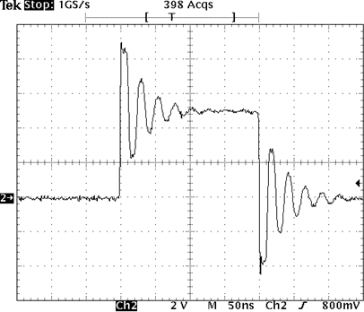
12. Option AT45 (45V Output)
For channels with the AT45 output option, the maximum frequency is limited to 100 KHz. The pulse width can be set over the standard range with both active high and low outputs in high impedance mode. In low impedance mode, the pulse width is limited to a maximum of 10 s and the active low output is no longer allowed. Use low-capacitance cable and 50 Ω termination for the fastest rise times without overshoot.
The channel menu structure for the AT45 module changes:
- When in the output menu, there is now a soft key for HiZ and LoZ modes that replaces the Adjustable vs TTL modes.
- Output amplitudes can be set from 4 to 45 volts.
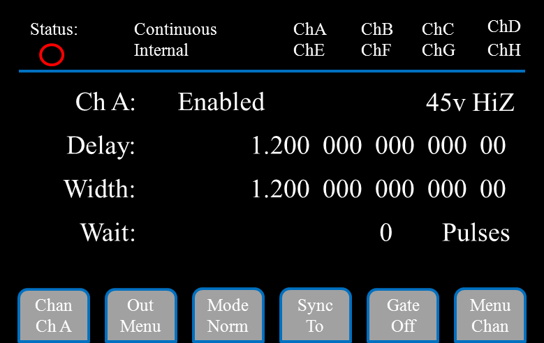
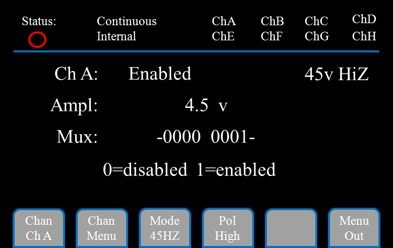
12.1 AT45 Protection Error Messages
12.1.1 Module Errors
If a channel on any AT45 module is over-driven, the channel disables itself and the system indicates an error. The error does not clear until the user fixes the cause and presses the Clr Err soft key, or power cycles the instrument. The overdriving protection is limited to low-resistance errors, not direct shorts to ground; damage to the output will occur when driving into short circuits. Module errors may occur due to any of the following:
- Over current
- Over temperature
- Internal hardware
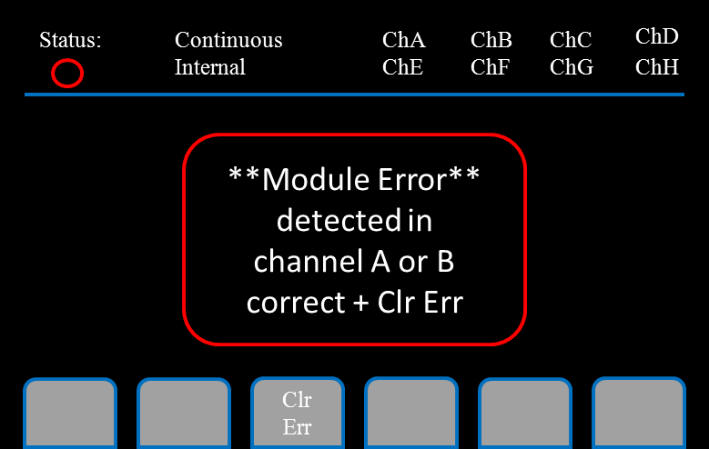
12.1.2 System Limit Error
The system will not allow Lo Impedance enabled AT45 channels to exceed 150 V total amplitude. If this occurs, the "Over-Driving Unit" error is displayed and the currently adjusting amplitude is reduced to the 150 V enabled channel limit.
12.2 Voltage Change Timing
The adjustable voltage changes very quickly when adjusting from a lower to a higher voltage but changes slowly when changing from a higher to a lower voltage. It takes approximately 30 sec to change from 45 V to 4.0 V, so caution must be taken when adjusting to a lower voltage-tolerant circuit.
12.3 AT45 SCPI Command Extension Summary
| Keyword | Parameter Range | Notes |
|---|---|---|
:PULSe[1/2/n] | Subsystem. Contains commands to control the output pulse generation. Valid suffix range depends on the number of channels (ChA = 1, ChB = 2, etc.). A command without a suffix refers to the currently selected logical instrument (see the INSTrument subsystem). | |
:OUTPut | Subsystem. Contains commands to control output mode. | |
:MODe | HIZ / LOZ | Selects output amplitude mode: High Impedance or Low Impedance. |
:AMPL | 4 V to 45 V | Sets adjustable output level. |
:MERRor | 1 | Clears the last module error to allow the unit to generate pulses again; query returns the last displayed error. |
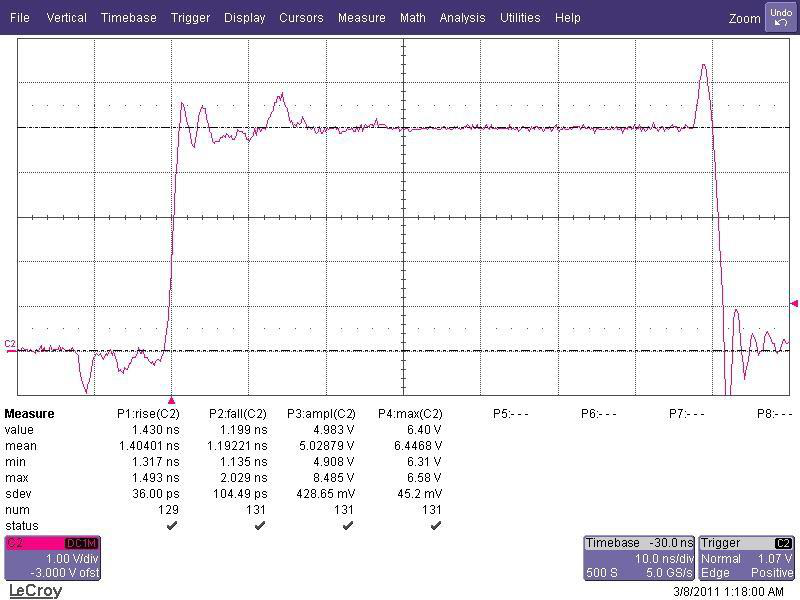
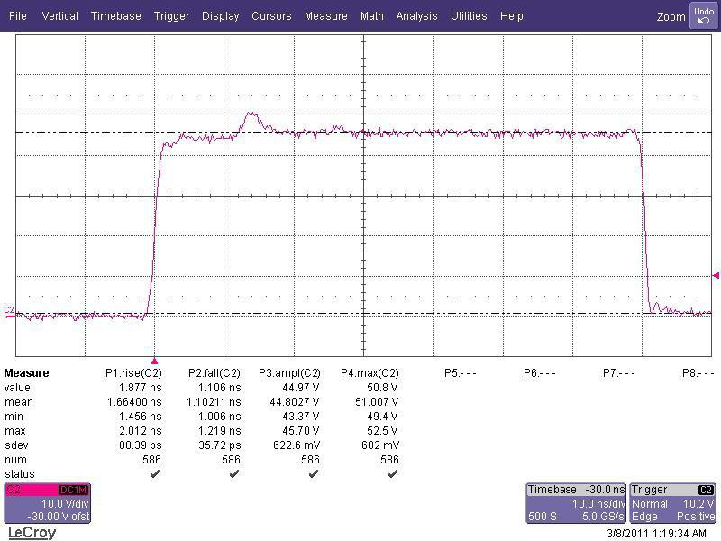

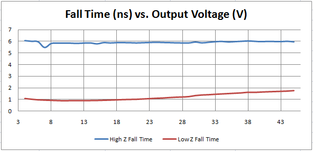

13. Safety Marking Symbols
This section describes the safety marking symbols that appear on the instrument. These symbols provide information about potentially dangerous situations which can result in death, injury, or damage to the instrument and other components.
| Symbol | Publication | Description / Comment |
|---|---|---|
| Alternating current | IEC 417, No. 5032 | Alternating current. |
| Earth (ground) terminal | IEC 417, No. 5017 | Earth (ground) terminal. Primarily used for functional earth terminals which are generally associated with test and measurement circuits. These terminals are not for safety earthing purposes but provide an earth reference point. |
| Protective earth (ground) terminal | IEC 417, No. 5019 | Protective earthing conductor terminal. This symbol is specifically reserved for the protective conductor terminal and no other. It is placed at the equipment earthing point and is mandatory for all grounded (Class I) equipment. |
| Frame or chassis terminal | IEC 417, No. 5020 | Frame or chassis terminal. Used for points other than protective conductor and functional earth terminals where there is a connection to accessible conductive terminals to advise the user of a chassis connection. |
| On (AC mains) | IEC 417, No. 5007 | On (AC mains). Located on the power switch at the rear of the unit. |
| Off (AC mains) | IEC 417, No. 5008 | Off (AC mains). Located on the power switch at the rear of the unit. |
| Class II equipment (double insulated) | IEC 417, No. 5172 | Class II equipment protected by double insulation or reinforced insulation. The equipment typically does not require a safety ground (protective ground). |
| Caution, risk of electric shock | ISO 3864, No. B.3.6 | Caution, risk of electric shock. |
| Caution, hot surface | IEC 417, No. 5041 | Caution, hot surface. |
| Caution, refer to accompanying documents | ISO 3864, No. B.3.1 | Caution (refer to accompanying documents), used to direct the user to the instruction manual where it is necessary to follow certain specified instructions where safety is involved. |
| In-position of bistable push control | IEC 417, No. 5268-a | In-position of bistable push control. |
| Out-position of bistable push control | IEC 417, No. 5269-a | Out-position of bistable push control. |
| Standby / On | IEC 60417, No. 5009 | Standby/On symbol, momentary contact switch, does not disconnect AC mains voltage. |
| WEEE (do not dispose in household waste) | WEEE Directive | Indicates compliance with the WEEE Directive. Please dispose of the product in accordance with local regulations and conventions. |
| CE marking | CE | Indicates compliance with European Union legislation for the relevant Safety (Low Voltage Directive 2006/95/EC) and EMC (EMC Directive 2004/108/EC) requirements. |
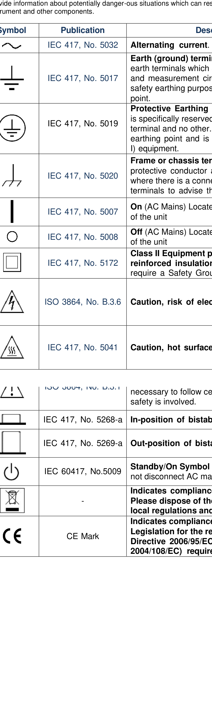
14. Model 577 Specifications
The complete Model 577 specifications follow, covering I/O configuration, the internal rate generator, the channel timing generator, standard features, system options, general and mechanical data, and the per-module specifications.
I/O Configuration
| Parameter | Specification |
|---|---|
| Model / Output | 577-4C: 4 independent channels. 577-8C: 8 independent channels. |
| Output Modules: Standard, AT20 | Dual channel, TTL/CMOS and Adjustable output module. |
| Output Modules: Optional, L82 | Dual channel, 820 nm optical output module. |
| Output Modules: Optional, L130 | Dual channel, 1300 nm optical output module. |
| Output Modules: Optional, AT35 | Dual channel, TTL / 35 V high voltage output module. |
| Output Modules: Optional, AT45 | Dual channel, 45 V high and low impedance voltage output module (limited to 4 channels). |
| Output Modules: Optional, TZ50 | Dual channel, high current TTL/CMOS (for driving 50 Ω loads) and Adjustable output module. |
| Output Modules: Optional, TZ35 | Dual channel, high current TTL/CMOS (for driving 50 Ω loads) and 35 V high voltage output module. |
| Input Modules: Standard, IA15 | Dual channel, 1 Trigger / 1 Gate input module. May be used with the Dual Trigger firmware option to provide two independent Trigger sources. |
| Input Modules: Optional, IL82 | Dual channel, 820 nm optical input module. |
| Input Modules: Optional, IL130 | Dual channel, 1300 nm optical input module. |
Internal Rate Generator
| Parameter | Specification |
|---|---|
| Rate (T0 period) | 0.001 Hz to 20.000 MHz (1000 s to 50 ns) |
| Resolution | 5 ns |
| Accuracy | 1 ns + (0.0001 x period) |
| T0 Period Jitter | < 50 ps RMS |
| Time Base | 100 MHz, low jitter PLL |
| Oscillator | 50 MHz, 50 ppm crystal oscillator |
| System Output Modes | Single, Normal, Burst, Duty Cycle, External Gate/Trigger |
| Burst Mode | 1 to 10,000,000 pulses |
| Duty Cycle Mode | 1 to 10,000,000 pulses ON and/or OFF |
| Pulse Control Modes | Internally triggered, externally triggered or external gate. |
Channel Timing Generator
| Parameter | Specification |
|---|---|
| Pulse Width Range | 10 ns to 1000 s |
| Width Accuracy | 1 ns + (0.0001 x width setting) |
| Width Resolution | 250 ps |
| Pulse Delay Range | 0 to 1000 s |
| Delay Accuracy | 1 ns + (0.0001 x delay) |
| Delay Resolution | 250 ps |
| Jitter (channel to channel) | < 50 ps RMS |
| Output Multiplexor | Any/all channels may be OR'd to any/all outputs. |
| Time Base | Same as internal rate generator |
| Channel Output Modes | Single, Normal, Burst, Duty Cycle |
| Burst Mode | 1 to 10,000,000 pulses |
| Duty Cycle Mode | 1 to 10,000,000 pulses on and/or off |
| Wait Counts | 1 to 10,000,000 pulses |
| Channel Control Modes | Internally triggered or external gated. Each channel may be independently set to either mode. |
Standard Features
| Parameter | Specification |
|---|---|
| Communications: USB | USB 1.0 standard |
| Communications: RS-232 | DB-9 connector using RS-232 communications standard |
| External Clock In | 10 MHz to 100 MHz, user selectable in discrete values |
| External Clock Input Voltage | 2.5 V to 5 V (max) |
| External Clock Out | T0 or Ref out (10 to 100 MHz), user selectable in discrete values |
System Options
| Parameter | Specification |
|---|---|
| DT15 | Dual Trigger Logic. Provides an additional trigger via the gate input. |
| COM | Extended Communications. Adds Ethernet and GPIB. |
| SRM | Single Rack Mount |
| DRM | Dual Rack Mount |
General
| Parameter | Specification |
|---|---|
| Storage | 16 storage bins |
| Dimensions | 10.5 in x 8.25 in x 5.5 in |
| Weight | 8 lbs |
| Power | 100 to 240 VAC, 50/60 Hz, 3 A |
| Fuse | (Qty 2) 3.15 A, 250 V time-lag |
| Temperature: Operation | 0 to 40 °C (32 to 104 °F) |
| Temperature: Transportation and Storage | -40 to 70 °C (-40 to 158 °F) |
Module Specifications
TTL / Adjustable Dual Channel Output Module (Standard)
| Parameter | Specification |
|---|---|
| TTL/CMOS Mode: Output Impedance | 50 Ω |
| TTL/CMOS Mode: Output Level | 4.0 V typ into 1 kΩ; 2.0 V typ into 50 Ω |
| TTL/CMOS Mode: Rise Time | 2.8 ns typ (10% to 90%) |
| TTL/CMOS Mode: Slew Rate | > 0.5 V/ns |
| TTL/CMOS Mode: Jitter | 50 ps RMS channel to channel |
| Adjustable Mode: Output Impedance | 75 Ω |
| Adjustable Mode: Output Level | 2.0 to 20 VDC into 1 kΩ; 0.8 to 8.0 VDC into 50 Ω |
| Adjustable Mode: Output Resolution | 10 mV |
| Adjustable Mode: Current | 200 mA typical, 400 mA (short pulses) |
| Adjustable Mode: Rise Time | 15 ns typ @ 20 V (high imp); 25 ns typ @ 10 V (50 Ω) (10% to 90%) |
| Adjustable Mode: Slew Rate | > 0.1 V/ns |
| Adjustable Mode: Overshoot | < 100 mV + 10% of pulse amplitude |
Trigger / Gate Dual Input Module (Standard)
| Parameter | Specification |
|---|---|
| Trigger Input: Function | Generate individual pulses, start a burst or continuous stream |
| Trigger Input: Rate | DC to 1 / (200 ns + longest active pulse). Maximum of 20 MHz. |
| Trigger Input: Slope | Rising or Falling |
| Trigger Input: Threshold | 0.2 to 15 VDC |
| Trigger Input: Maximum Input | 30 V Peak |
| Trigger Input: Resolution | 10 mV |
| Trigger Input: Trigger Accuracy | ±3% of threshold voltage |
| Trigger Input: Impedance | 5.3 kΩ + 40 pF |
| Trigger Input: Trigger Jitter | < 800 ps RMS |
| Trigger Input: Insertion Delay | < 110 ns |
| Trigger Input: Minimum Pulse Width | ≥ 20 ns |
| Trigger Input: Pulse Inhibit Delay | < 150 ns RMS |
| Trigger Input: Output Inhibit Delay | < 100 ns RMS |
| Gate Input: Mode | Pulse inhibit or output inhibit |
| Gate Input: Polarity | Active high / active low |
| Gate Input: Trigger Jitter (Gate as Trigger Input) | < 800 ps RMS |
Optical Outputs
| Parameter | Specification |
|---|---|
| Wavelength | 820 nm or 1300 nm |
| Maximum Signal Rate | 5 MBd |
| Maximum Link Distance | 1.5 km |
| Connector Type | ST |
Optical Inputs
| Parameter | Specification |
|---|---|
| Wavelength | 820 nm or 1300 nm |
| Maximum Signal Rate | 5 MBd |
| Maximum Link Distance | 1.5 km |
| Connector Type | ST |
| Insertion Delay | < 300 ns |
| Jitter | < 1.4 ns RMS |
AT35 Module
| Parameter | Specification |
|---|---|
| Through a 50 Ω load at 200 Hz | |
| Output | 5 V to 35 V |
| Setpoint Resolution | 10 mV |
| Rise Time | < 30 ns |
| Accuracy | 500 mV |
| Max. Frequency (Internal and External) | 4000 Hz |
TZ50 Module
| Parameter | Specification |
|---|---|
| TTL/CMOS Mode: Output Level | 4.0 V typ into 50 Ω |
| TTL/CMOS Mode: Rise Time | 2.8 ns |
| TTL/CMOS Mode: Slew Rate | 0.5 V/ns |
| TTL/CMOS Mode: Jitter, Channel to Channel | 50 ps RMS |
| Adjustable Mode: Output Resolution | 10 mV |
| Adjustable Mode: Current | 100 mA typ, 400 mA max (short pulses) |
| Adjustable Mode: Slew Rate | 0.1 V/ns |
AT45 Module
| Parameter | Specification |
|---|---|
| Amplitude | 4 V to 45 V |
| Resolution | 20 mV |
| Accuracy | ±1.5% |
| Rise Time | < 2 ns typical 10%-90% (Low Z); < 9 ns typical 10%-90% (High Z) |
| Fall Time | < 2 ns typical 90%-10% (Low Z); < 9 ns typical 90%-10% (High Z) |
| Frequency (Internal and External) | DC to 100 kHz |
| Overshoot | < 35% typical, allowed for fast rise time |
| Polarity - High Z (> 10k) | Active High or Active Low |
| Polarity - Low Z (50 Ω) | Active High only |
| Pulse Width - High Z (> 10k) | 10 ns to DC |
| Pulse Width - Low Z (50 Ω) | 10 ns to 10 s |
| Current (maximum) | 35 mA (High Z @ 10 ms width); 900 mA (Low Z @ 10 ms width) |
15. Contact
Berkeley Nucleonics Corporation. Phone: (415) 453-9955. Email: info@berkeleynucleonics.com. Address: 2955 Kerner Blvd, San Rafael, CA 94901. Web: www.berkeleynucleonics.com.
Model 577 User Manual. Document Version: 1.5. Print Code: 22027011.